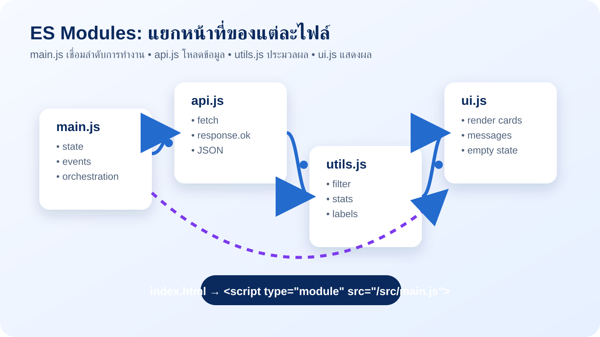

✨
1. Modern JavaScript
เลือกใช้ const/let, template literal, destructuring, spread/rest, arrow function และ array methods อย่างมีเจตนา
- แปลงและคัดเลือกข้อมูลโดยไม่แก้ต้นฉบับ
- ทำโค้ดที่อ่านง่ายและตรวจสอบได้
สื่อการสอนเชิงปฏิบัติแบบโต้ตอบสำหรับ JavaScript สมัยใหม่, ES Modules, async/await, Error Handling, npm Scripts, Git Workflow และ GitHub Pages โดยยึดโจทย์เดียวกันคือ ENGSE203 Learning Dashboard
 Programming Workshop • ENGSE203
Programming Workshop • ENGSE203ใช้สื่อเป็น “พื้นที่ทดลอง” ระหว่างอาจารย์อธิบาย: อ่านแนวคิด → กดทดลอง → ดูผลลัพธ์ → ปรับหรือท้าทายตัวเอง → เชื่อมไปยัง LAB 2 จริง
เลือกใช้ const/let, template literal, destructuring, spread/rest, arrow function และ array methods อย่างมีเจตนา
แยก API, logic, UI และ entry point เพื่อให้ความรับผิดชอบของแต่ละไฟล์ชัดเจน
จัดการ loading/error, ใช้ npm scripts และมีหลักฐานการพัฒนาผ่าน branch, commit, PR และ GitHub Pages
ใช้สไลด์หลักเพื่ออธิบาย Why และคำศัพท์ จากนั้นเปิด Sandbox เพื่อให้ผู้เรียนเห็นการทำงานในระดับโค้ดและ UI
ถามว่า output จะเป็นอย่างไร, error จะถูกจับที่ใด, หรือขั้นถัดไปของ Git workflow คืออะไร
Sandbox เป็นพื้นที่ปลอดภัยสำหรับเข้าใจแนวคิด แต่ LAB 2 ต้องปฏิบัติในโครงงาน Vite จริงตามขั้นตอนท้ายบท

เริ่มจาก data model เดียวกับ Learning Dashboard แล้วใช้ array methods, destructuring และ spread เพื่อสร้างข้อมูลใหม่โดยไม่แก้ไขข้อมูลต้นฉบับ
ใช้เมื่อไม่ต้อง assign ตัวแปรใหม่ ช่วยสื่อว่า reference นี้ไม่ควรถูกเปลี่ยน
ใช้กับตัวนับหรือ state ที่มีการ reassign จริง ๆ หลีกเลี่ยง var ในโค้ดสมัยใหม่
ดึง property ที่จำเป็นจาก object ลดการอ้างถึง task.status ซ้ำ ๆ
สร้าง object/array ใหม่ด้วย ... และใช้ map/filter/reduce เพื่อแปลงข้อมูลแบบมีขั้นตอน
เลือกเฉพาะ task ที่ยังไม่ done โดยรับค่า status ผ่าน destructuring ใน parameter
สร้าง object ใหม่จาก task เดิมด้วย spread แล้วปรับ title ให้สะอาด โดยไม่แก้ array ต้นฉบับ
รวมเวลาของงานที่ยัง active เป็นค่าเดียว ซึ่งเป็นรูปแบบใช้สร้าง summary card ใน Dashboard
แก้เงื่อนไขให้แสดงเฉพาะงาน todo แล้วคำนวณเวลารวมใหม่ จากนั้นเพิ่ม task อีกหนึ่งรายการโดยใช้ spread ไม่ใช้ push()
เป้าหมายไม่ใช่แยกไฟล์ให้มากที่สุด แต่แยกตาม “ความรับผิดชอบ” เพื่อให้แก้ไข ทดสอบ และอ่านเส้นทางของข้อมูลได้ง่าย
<script type="module" src="/src/main.js"></script>
คำว่า type="module" บอกเบราว์เซอร์ว่าควรแก้ dependency ของ import/export ก่อนเริ่มทำงาน และ module มี scope ของตัวเอง
การทดสอบ ES Modules และ fetch ควรทำผ่าน local development server เช่น Vite ด้วย npm run dev ไม่ใช่ file:// เพราะบริบทการโหลดและนโยบายความปลอดภัยไม่เหมือนเว็บจริง
หากต้องเพิ่ม “sort tasks by minutes” โค้ดควรอยู่ไฟล์ใด? แล้ว main.js ควรทำอะไรกับผลลัพธ์ที่ได้?
การโหลดข้อมูลอาจช้า หาย หรือได้ HTTP status ที่ไม่สำเร็จ โปรแกรมที่ดีต้องไม่ปล่อยหน้า blank แต่ต้องสื่อสาร Loading → Success หรือ Error อย่างเข้าใจได้
เริ่มคำขอแล้วแต่ยังไม่มีผลลัพธ์ ให้บอกผู้ใช้ว่าระบบกำลังทำอะไร
ตรวจว่าตอบกลับสำเร็จแล้วจึงอ่าน JSON และ render UI
จับความผิดพลาดด้วย try/catch และใช้ finally กับงานที่ต้องทำเสมอ
const response = await fetch(url);
if (!response.ok) {
throw new Error(`HTTP ${response.status}`);
}
return response.json();แม้ fetch ได้ response 404 หรือ 500 มันอาจ resolve ได้ จึงต้องตรวจ response.ok เองก่อนอ่าน JSON
try {
setMessage("loading", "กำลังโหลดข้อมูล...");
const tasks = await fetchLearningTasks();
renderDashboard(tasks);
setMessage("success", `โหลด ${tasks.length} รายการแล้ว`);
} catch (error) {
setMessage("error", `ไม่สามารถโหลดได้: ${error.message}`);
} finally {
console.log("Load attempt finished");
}ถ้าตัด response.ok ออก แล้ว API คืน HTTP 500 จะเกิดอะไรขึ้นกับโค้ดที่พยายามอ่าน JSON? การมี error UI ช่วยผู้ใช้อย่างไร?

ตัวอย่างนี้ทำหน้าที่เสมือนผลลัพธ์ LAB 2: มี state, data loading, stats, search/filter และ error state ในหน้าจอเดียว
ENGSE203 • LAB 2
Modern JavaScript, async data, and GitHub Pages
const state = { tasks: [], query: "", status: "all" };
function render() {
const visibleTasks = filterTasks(state.tasks, state);
renderStats(elements.stats, getStats(state.tasks));
renderTasks(elements.taskList, visibleTasks);
}package.json เป็นจุดรวม metadata และ scripts เพื่อให้ผู้พัฒนาและผู้ตรวจงานเรียกคำสั่งเดียวกันได้ ไม่ต้องจำ command ยาวหรือ path ของ tool
ลองกดปุ่ม หรือพิมพ์คำสั่ง npm run dev, npm run check, npm run build, npm run preview
{
"scripts": {
"dev": "vite",
"build": "vite build",
"preview": "vite preview",
"check": "node scripts/check-project.mjs"
}
}devเปิด development server ระหว่างพัฒนา
checkตรวจโครงสร้างไฟล์สำคัญตาม checklist
buildสร้าง production output ไปยัง docs/
previewดู output หลัง build ก่อนเผยแพร่
ก่อน deploy ควรรันคำสั่งใดอย่างน้อย 2 คำสั่ง? เพราะเหตุใดจึงไม่ควร deploy โดยข้ามขั้น build หรือ preview?
แม้ LAB 2 เป็นงานรายบุคคล แต่ใช้ feature branch และ pull request เพื่อฝึก workflow ที่ใกล้เคียงการทำงานจริง: main เก็บงานที่พร้อมใช้งาน ส่วน branch เป็นพื้นที่พัฒนาอย่างมีหลักฐาน
กด “ขั้นถัดไป” เพื่อเดินผ่าน workflow จาก repository ว่างจนพร้อม deploy
เริ่มโครงงานและ clone repository
พัฒนาใน feature/lab02-dashboard
บันทึกหลักฐานด้วยข้อความชัดเจน
อธิบาย feature และวิธีทดสอบ
พร้อม build และ publish
ลองพิมพ์ commit message แล้วตรวจว่ามี intent และรายละเอียดเพียงพอหรือไม่
git switch -c feature/lab02-dashboard git add . git commit -m "feat: build async learning dashboard" git push -u origin feature/lab02-dashboard
LAB 2 ใช้ Vite build output ไปยัง docs/ และกำหนด GitHub Pages ให้ publish จาก main /docs เพื่อเก็บ source code และเว็บไซต์ที่เผยแพร่ไว้ใน repository เดียวกัน
แทนที่ข้อมูลตัวอย่างด้วย username และ student ID แล้วตรวจว่า base path และ Pages URL สอดคล้องกับชื่อ repository หรือไม่
import { defineConfig } from "vite";
export default defineConfig({
base: "/engse203-lab02-<student-id>/",
build: {
outDir: "docs",
emptyOutDir: true,
},
});| สิ่งที่ตรวจ | คำตอบที่ถูก |
|---|---|
| ชื่อ repository | engse203-lab02-<student-id> |
| Vite base | ตรงกับชื่อ repository และมี / ทั้งต้น/ท้าย |
| build output | docs/ อยู่ใน main branch ล่าสุด |
| Pages setting | Deploy from a branch → main → /docs |
| ข้อมูลลับ | ห้าม deploy token, password, .env ที่มีความลับ |
Sandbox อธิบายและให้ทดลองแนวคิด ส่วนต่อไปนี้คือเส้นทางปฏิบัติจริงใน VS Code, WSL/macOS Terminal และ GitHub เพื่อให้ส่งงานได้ครบตาม rubric
~/Documents/ENGSE203 → เปิด VS Code Integrated Terminal → ใช้ node, npm และ git
~/projects/ENGSE203 ใน Ubuntu WSL → ใช้ Remote - WSL และหลีกเลี่ยงการสร้าง project ตรง C:\
node -v, npm -v, git --version, ตรวจชื่อ/อีเมล Git และ ssh -T git@github.com
# 1) branch + Vite git switch -c feature/lab02-dashboard npm create vite@latest . -- --template vanilla npm install # 2) local test npm run check npm run dev # 3) before deploy npm run build npm run preview # 4) commit and push git add . git commit -m "feat: build async learning dashboard" git push -u origin feature/lab02-dashboard
| เกณฑ์ | หลักฐานสำคัญ | คะแนน |
|---|---|---|
| Modern JavaScript & ES Modules | const/let, destructuring/spread หรือ array method อย่างเหมาะสม และแบ่ง api/utils/ui/main พร้อม import/export | 0.80 |
| Async/Await & Error Handling | fetch + async/await, ตรวจ response.ok, มี loading/success/error UI และทดสอบ error state | 0.80 |
| npm Scripts & Build | dev/build/preview/check ทำงาน, check + build สำเร็จ, docs/ อยู่ใน main | 0.40 |
| Git Workflow | feature branch, meaningful commit, Pull Request และ merge ตรวจสอบได้ | 0.50 |
| GitHub Pages & Documentation | Pages URL ทำงาน และ README มีวิธีรัน, URL, test evidence, references / AI disclosure | 0.50 |
| รวม | งานต้อง build ได้จริง ไม่มี node_modules หรือ secret ใน repository | 3.00 |